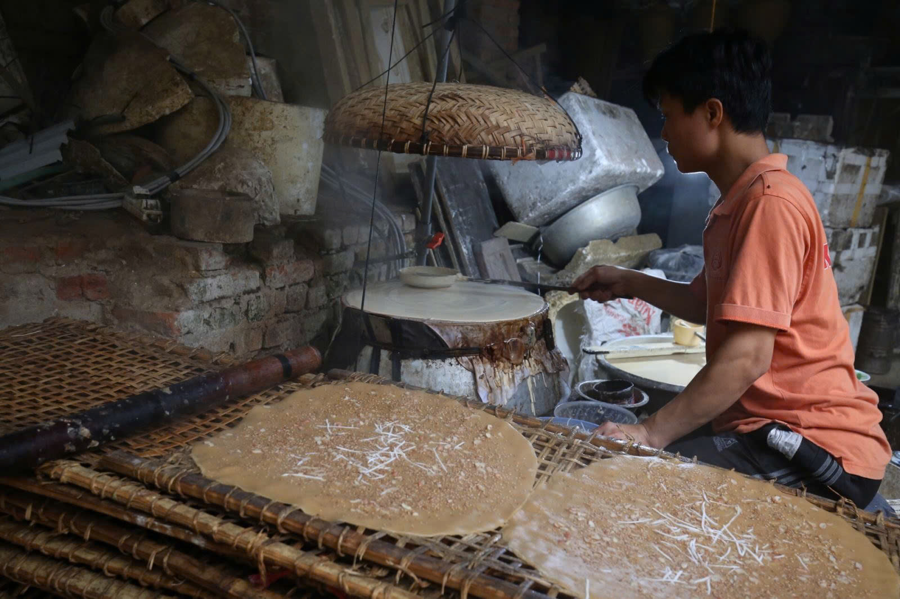

Bánh Đa Thổ Hà
Giới thiệu qua về làng Thổ Hà " Nơi tạo ra bánh đa thổ hà Bắc Giang - đặc sản quê hương"
Thổ Hà với tên gọi một làng nghề thuộc xã Vân Hà huyện Việt Yên tỉnh Bắc Giang. Không những nơi đây là một làng cổ với phong cảnh hữu tình, cây đa, bến nước, sân đình, mà còn là một làng nghề nổi tiếng với nghề làm gốm trước năm 1960, ngày nay từ năm 1990 trở đi Thổ Hà nổi tiếng với nghề làm bánh đa, và đã trở thành một đặc sản Bắc Giang nổi tiếng.
Bánh ở đây với công thức chế biến đặc biệt nên có vị ngon riêng, khác hẳn với bánh đa thông thường của các vùng khác. Nếm một chiếc bạn sẽ cảm nhận được điều đó. Bánh đa Thổ Hà nổi tiếng nhờ vị thơm ngon từ nguyên liệu được chọn lọc kỹ càng, đòi hỏi người thợ làm bánh đa phải là một người thợ lành nghề, có con mắt tinh tế, bàn tay khéo léo mới làm ra được một cái bánh đa đạt tiêu chuẩn.
Đặc điểm của Bánh đa thổ hà Bắc Giang chưa nướng và Bánh đa thổ hà Bắc Giang đã nướng chín
Bánh đa chưa nướng có màu vàng và dai, bánh sau khi nướng có màu vàng rộ, giòn tan khi ăn có vị thơm bùi của vừng, của lạc, béo của dừa nạo rất hài hòa và trọn vị.
Để có một mẻ Bánh đa thổ hà Bắc Giang ngon, người Thổ Hà phải chọn nguyên liệu cẩn thận, công phu, phải chọn gạo tẻ loại ngon; vừng trắng đãi kỹ, không sạn; lạc loại già, mẩy; dừa già, cùi dày.

Cách làm Bánh đa thổ hà Bắc Giang chuẩn vị 10 lần như 10
☘ Bước 1: Ngâm gạo 1-2 tiếng để ráo nước, chắt cho ráo nước rồi xay thành bột gạo.
☘ Bước 2: Hòa đều nước bột gạo cùng với nước đường rồi đem tráng lên như bánh cuốn.
☘ Bước 3: Tráng đều hai lớp, lớp đầu chỉ có bột, lớp thứ hai mới rắc lạc, vừng, dừa nạo lên.
☘ Bước 4: Sau thời gian khoảng một phút, mở chiếc vung ra, người thợ làm bánh dùng một chiếc ống nứa cuộn chiếc bánh đã tráng xong rải lên tấm phên tre.
☘ Bước 5: Cứ thế hết phên này đến phên khác được mang ra phơi giữa trưa hè. Vậy là đã hoàn thành những chiếc bánh đa thơm ngon.